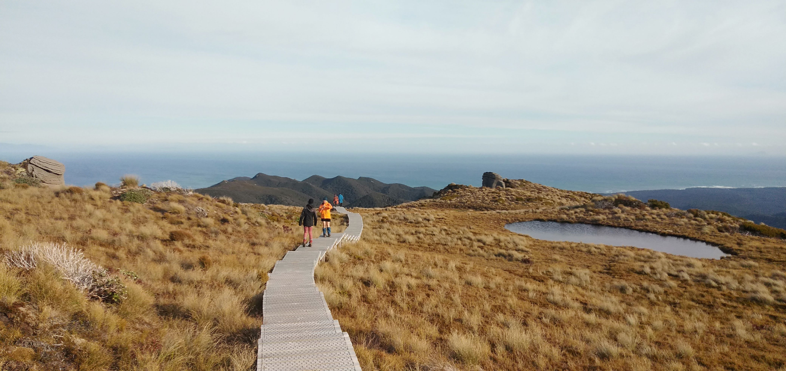

About Me
Kia ora koutou, Ko Kaukau tōku maunga, nō te Whanganui-a-Tara ahau, ko Lauren tōku ingoa. My name is Lauren (she/her) and I’m currently living in Wellington. I’ve been thinking about connection, and how genuine human connection is one of my core values. I’m sure many of you have heard this one, but my favourite Whakataukī is ‘He aha te mea nui o te ao? He tāngata, he tāngata, he tāngata!’, ‘What is the most important thing in the world? The people, the people, the people’. I recently finished my Bachelors in classical performance, where I connected to people through music. Now I’m taking a different approach and hoping to connect through tech! I’ve done a little bit of code before, so I’m very excited to strengthen those skills at dev academy, and hopefully break into the tech industry. I’m especially excited to meet lots of new people here!
Outside of Dev Academy I enjoy making music, going on walks, and playing any indie games my laptop can handle (Hollow Knight and Stardew Valley are my favourites!)
|

The view from the top of the Humpridge Tramp. I've done a few tramps but this is one of my favourites! |
|
My instrument is the French horn! I play part time in the RNZAF Band, you may have seen us out on parade before. |
As part of my minor in sonic arts, I learned all kinds of things to do with sound, code, software and electronics! My latest project was building an effects controller for my horn (kind of like a pedal board for guitar)